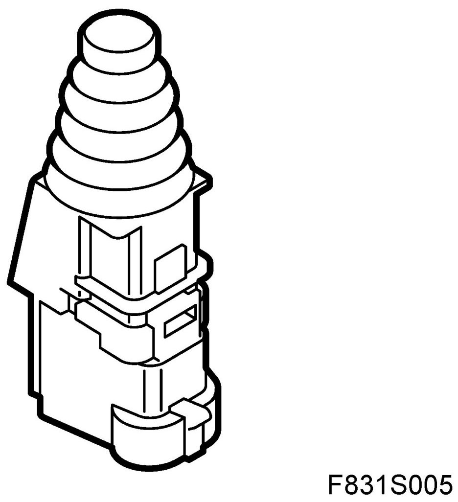
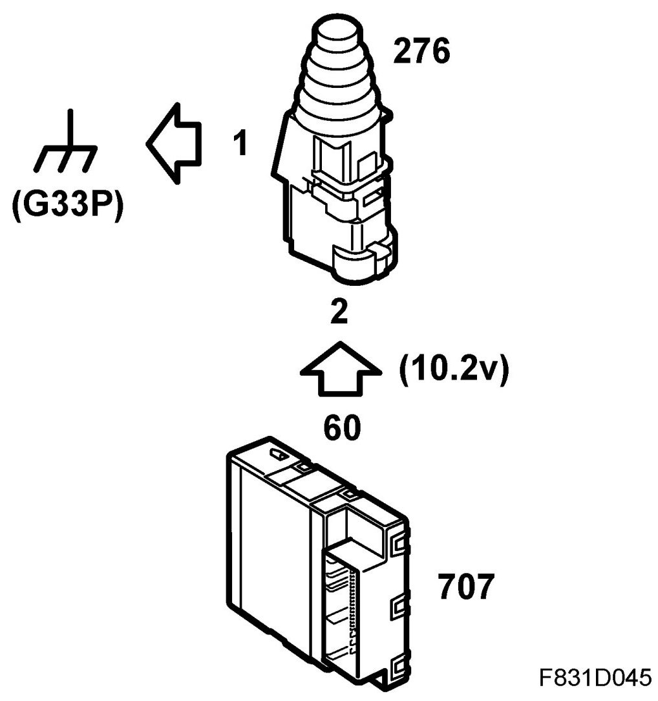
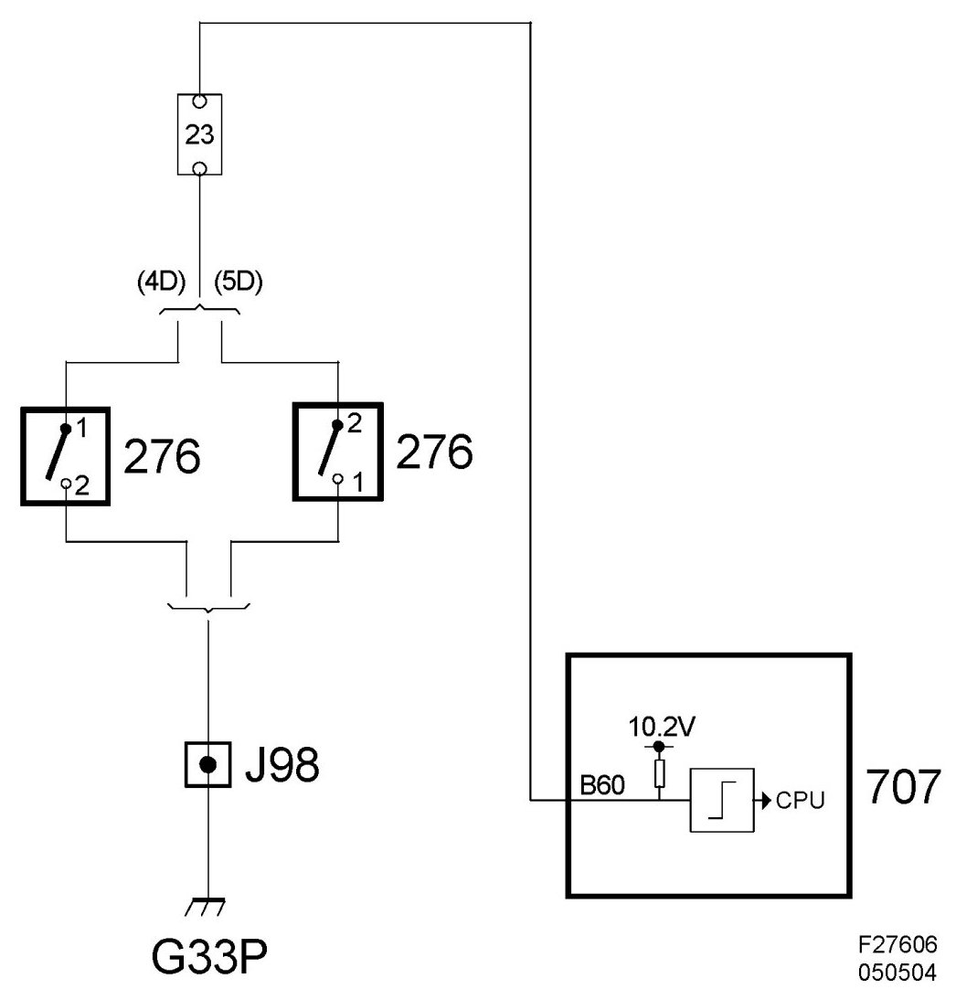

Electrical Diagrams
Bonnet Switch, Anti-Theft Alarm (276)
Location
Bonnet switch, anti-theft alarm (276)

Main task
Used to indicate whether the bonnet is open or closed. The value is used for the anti-theft alarm function and to inform the driver that the bonnet is not closed. BCM sends the status of the switch on the bus.
Type
The switch contains a single pole breaker. When the bonnet is closed the breaker is open. When the bonnet opens the breaker makes.
Connect
Pin 2 has direct chassis grounding and pin 1 feeds with 10.2V via a resistor of 1.5 kohm integrated in BCM. The control module input is digital. A voltage above 2V is interpreted as an open circuit while lower than 2V is interpreted as closed.

